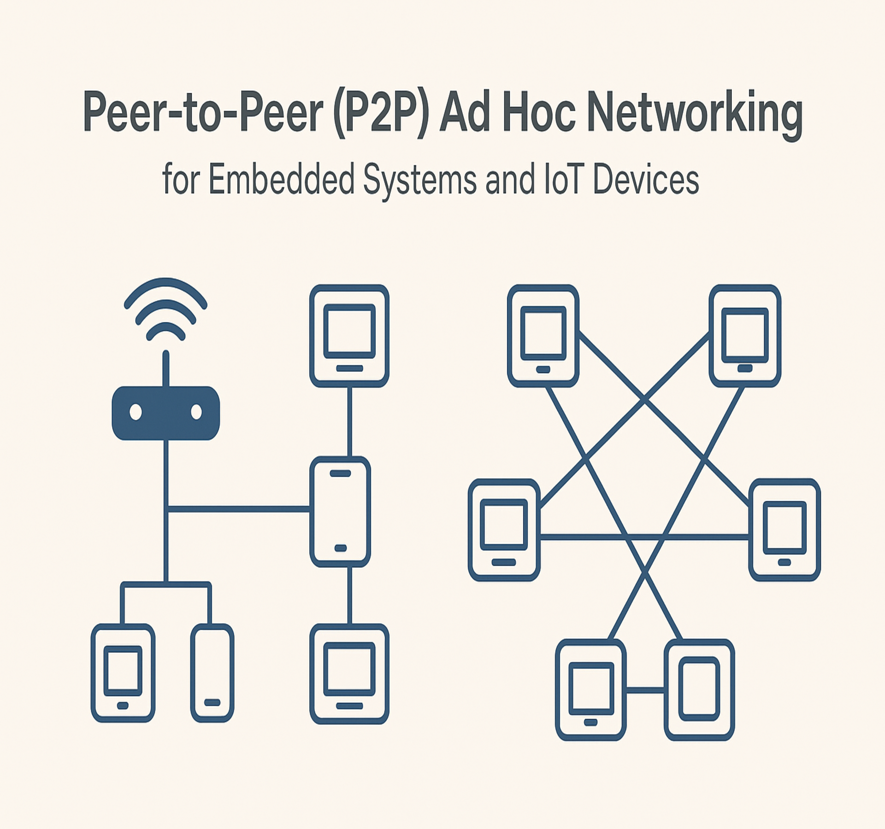
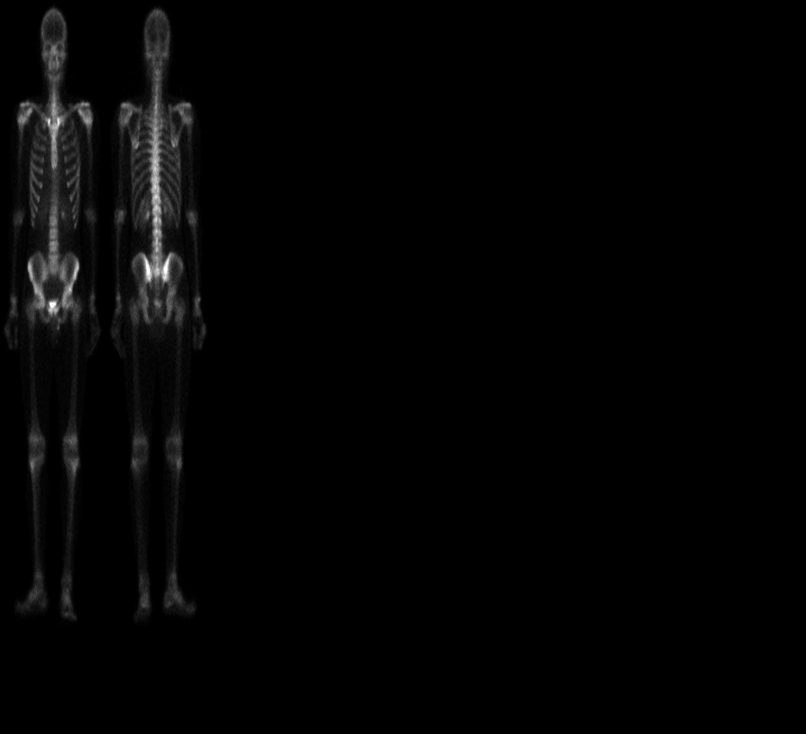
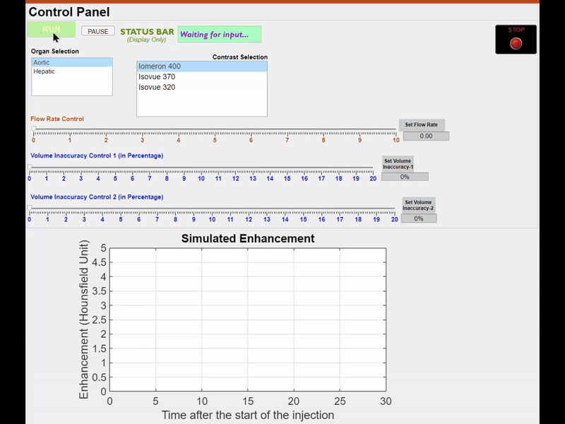
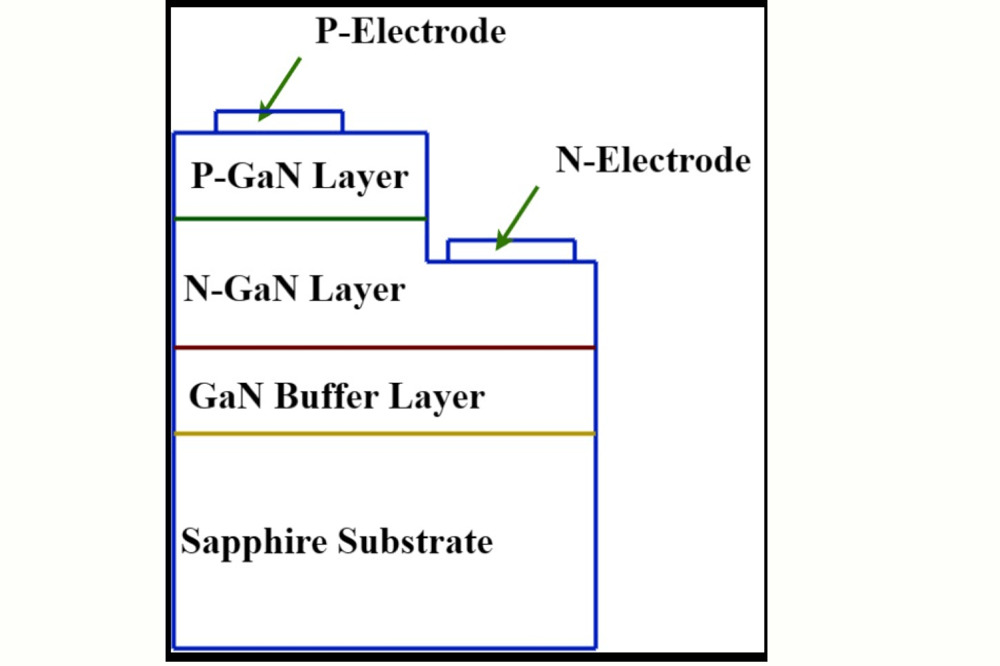
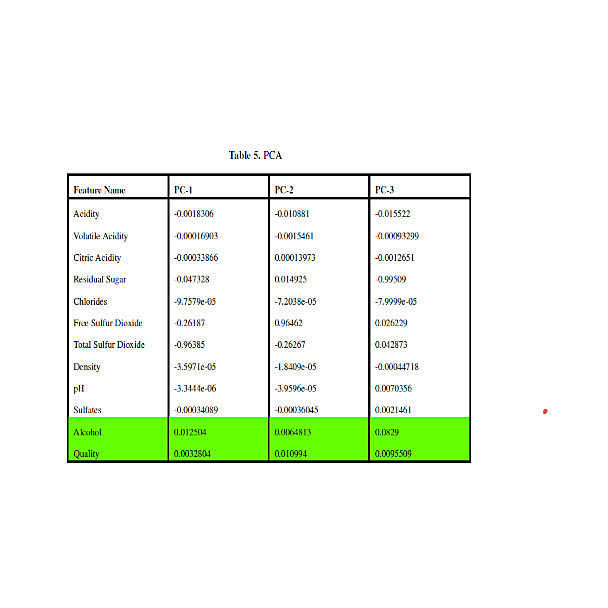
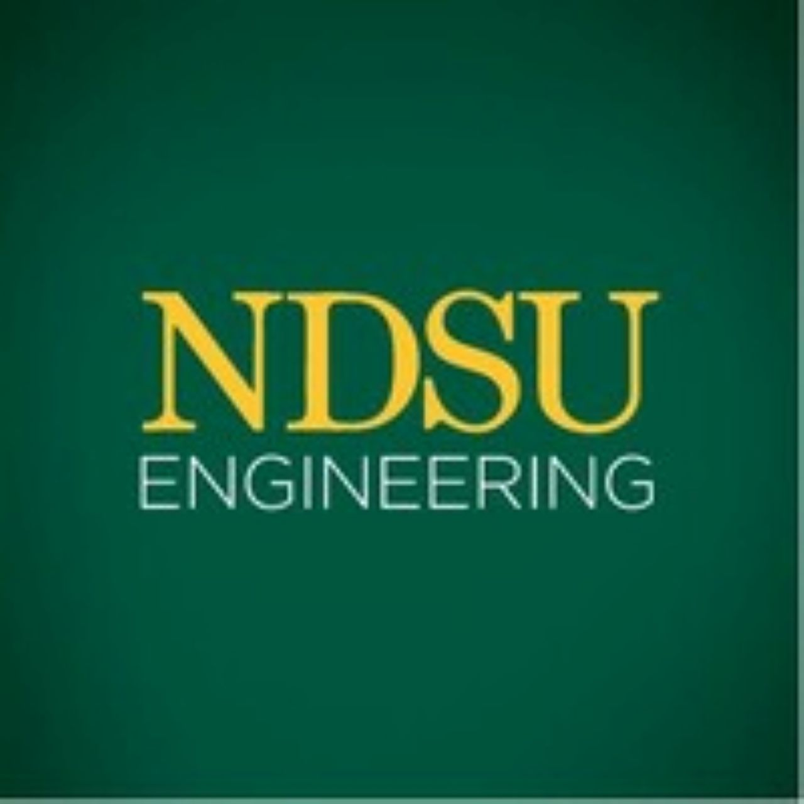
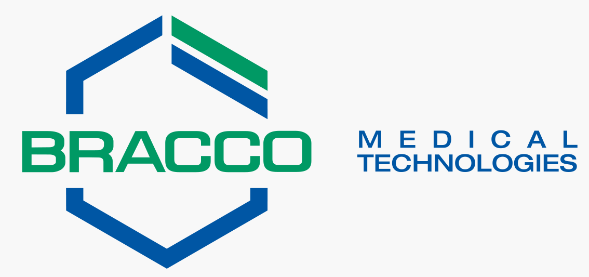
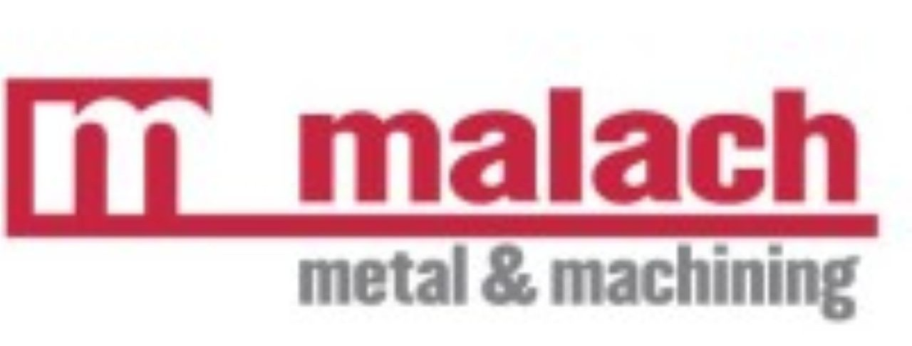
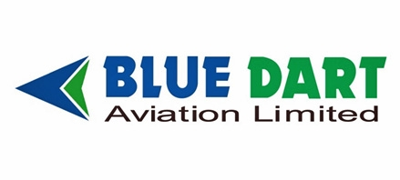
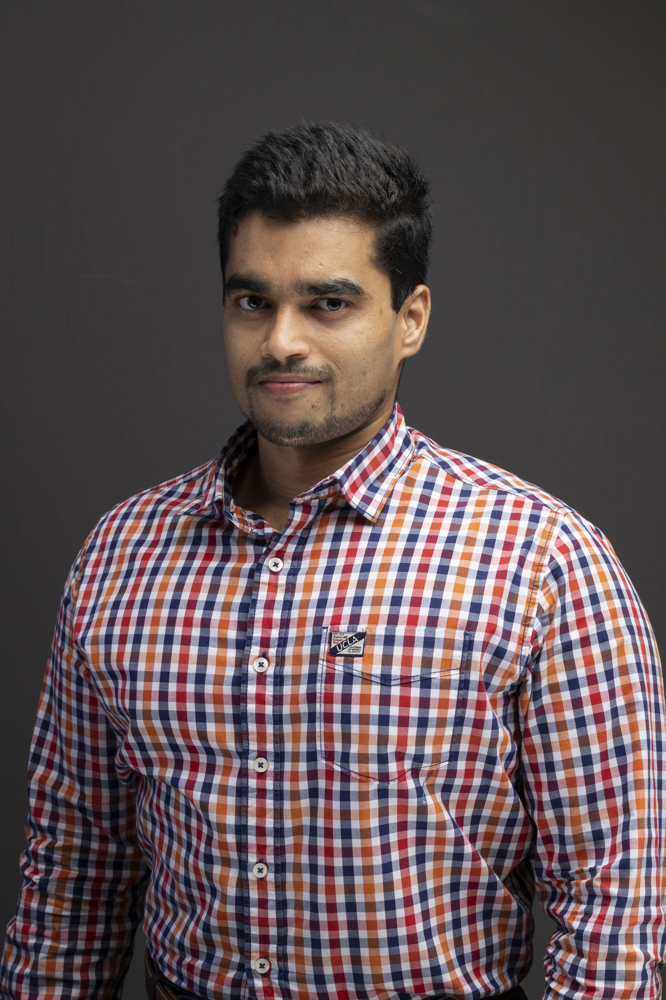

Selected Projects
Autonomous Navigation for UGVs, UAVs, AMRs, etc.
Assist UGVs (or AMRs) in navigating unknown environments by avoiding obstacles through real-time reactions, similar to human driving, instead of relying on pre-built maps. This approach utilizes simple yet effective stereo depth sensors to create depth maps for obstacle avoidance, avoiding the need for expensive, complex sensors. By integrating basic odometry controls (in combination with GPS), the system enables the vehicle to reach its destination while avoiding obstacles, without relying on AI-driven systems. It performs effectively in dynamic environments, reacting to nearby obstacles rather than mapping the entire environment at each step.
- Embedded Systems
- IT: centralized networking
- ROS2
- Path-Planning
- Computer Vision / OpenCV
- Python/C++

Resilient Peer-to-Peer Mesh Networking for Off-Grid IoT Systems
Developed for robust, long-duration communication in infrastructure-less environments, this dual-mode peer-to-peer (P2P) networking system supports both centralized and decentralized configurations. In Centralized Mode, a device configured with hostapd serves as an access point, allowing client nodes to connect via DHCP or static gateways—enabling controlled access and easier topology management. In Decentralized Mode, a fully peer-to-peer mesh is formed using wpa_supplicant (802.11s) and systemd-networkd, with static IPs set via Netplan. Devices self-organize and maintain direct communication as nodes join or leave, ensuring resilient connectivity. Custom shell scripts streamline deployment across Ubuntu 22.04 LTS, making it ideal for ROS-based systems, IoT clusters, and multi-agent platforms in ad hoc or disconnected settings.
- Linux Networking Kernel Modules (nl80211)
- Hostapd + DHCP/Static Gateway Configuration
- WPA_Supplicant (WPA3-PSK Authentication)
- Netplan + systemd-networkd (persistent IP & routing)
- Bash Automation (Device Discovery & IP Assignment)
- Low-Latency Command Routing

Advanced Image Processing for Feature Enhancement and Segmentation
Specialized in developing robust image processing techniques for diverse applications including medical imaging, thermal imaging, and robotics. Projects include the design of: (1) Morphological Enhancements using dilation and closing operations to fill discontinuities in depth maps (achieving a 25% accuracy improvement), (2) Global Thresholding using Basic, Otsu, and P-Tile methods for binary segmentation of thermal images, and (3) Spatial Filtering through custom MATLAB algorithms implementing Laplacian sharpening and Sobel edge detection. Systems processed FLIR thermal images and X-ray scans, achieving 90% separability (η) with Otsu's method and sub-10mm precision in morphological depth enhancements.
- MATLAB Image Processing
- Morphological Operations (Dilation/Closing)
- Global Thresholding (Otsu, P-Tile)
- Spatial Filtering (Laplacian, Sobel)
- Histogram Analysis
- Thermal/Medical Image Enhancement


Next Generation CT Injector
A comprehensive redesign of the CT injector and its components to meet user demands for high flow rates. Key improvements in the injector pump design enable compatibility with a full range of injection protocols, considering factors such as patient gender and cardiac output and other physiological attributes. Enhancements also focus on minimizing patient line failures by pre-stressing tubes to withstand high-volume and high-flow-rate conditions, particularly for organs like the heart and brain, where the Contrast Medium attenuation peak is critically narrow.
- R&T Systems Level Analysis
- CT Injector Design
- Contrast Medium
- Injection Protocols
- Pump Design
- PBPK Modelling

Breathe Analyzer Kit
Developed a compact KWO-complex-based breath analyzer using ADC logic to map measured resistance to diabetes results. Achieved by integrating machine learning/statistical modeling to correlate KWO nanomaterial signals with human breath for diabetes detection. Designed an initial clinical test prototype with a miniaturized, 3D-printed PLA enclosure for enhanced sensitivity across a wide range. Optimized for small form factor, ensuring portability and feasibility as a proof-of-concept medical device.
- Arduino Nano, ESP32
- 3-D Printing
- PCB Design
- ADC Convertors
- Statistical Analysis / Machine Learning

High-Power GaN Blue LED I–V and EL Characterization
Analyzed and modeled high-power GaN-based P–N junction blue LEDs to optimize peak blue electroluminescence (EL) while preserving power efficiency and thermal stability. The project involved calculating built-in potential and depletion layer width from doping concentrations, evaluating depletion behavior under varying forward bias, and extracting reverse saturation current using reported test conditions. The emission coefficient (n) was derived from the Shockley diode equation and reverse-engineered to model I–V characteristics. A practical LED drive circuit with a series potentiometer was designed to allow user-controlled brightness while maintaining peak blue EL and preventing device degradation.
- GaN P-N Junction LED Modeling
- Built-in Potential & Depletion Width Analysis
- Shockley Diode Equation
- I–V Characteristic Modeling
- Electroluminescence (EL) Optimization
- Analog Circuit Design & Current Control

Machine Learning Engineering
Leverages diverse algorithms to solve classification, regression, and feature selection challenges across domains. Applies information theory for predictive feature ranking, decision trees for high-accuracy classification, and Adaline regression with gradient descent optimization. Implements Naive Bayes for probabilistic modeling and LDA/QDA for non-linear separation. Utilizes Relief Algorithm for feature weighting and validates models through rigorous statistical testing. Specializes in bias mitigation and overfitting prevention techniques for production-ready solutions.
- Decision Trees & Ensemble Methods
- Naive Bayes Classifiers
- LDA/QDA Models
- Adaline Regression
- Relief Algorithm
- χ²/Cramer's V Validation

CAD Designs
Redesigned the full-scale manufacturing plant layout to optimize spatial efficiency, material flow, and departmental integration across fabrication, machining, and assembly zones. Developed high-precision 3D models and released comprehensive engineering documentation to facilitate seamless equipment transitions and future scalability. Engineered custom welding fixtures for robotic and manual applications, driving dimensional accuracy, improving production throughput, and reducing quality deviations through close collaboration with QA and manufacturing teams.
- CAD/CAM (SolidWorks)
- Sheet Metal Fab
- Robotic Weld
- Laser CNC
- Quality Control
- Shop Floor Management (ERP)

Current & Previous Employers




About Me
Hi, I’m Vomsheendhur Raju, and I go by Vom. Born in Pondicherry, India, I developed an early interest in mechanical engineering and intelligent systems. I earned my B.S. in Mechanical Engineering from North Dakota State University, where my training emphasized mechanical design, finite element analysis (FEA), and heat and mass transfer, including a senior design project developing a non-LTE plasma chamber. Alongside my academic work, I worked in the aviation industry performing non-destructive testing (NDT). Following graduation, I worked in the manufacturing and medical device industries, first as a Lead Mechanical Engineer in sheet metal fabrication and later as an R&T Systems Engineer developing injector systems for interventional cardiology, building experience in safety-critical, regulated products and system-level integration. I earned my Ph.D. in Mechanical Engineering from North Dakota State University, specializing in mechatronics and robotics, with a focus on robotic vision and autonomous systems. My doctoral research addressed end-to-end autonomous navigation for unmanned vehicles, encompassing perception, mapping, planning, control, and embedded implementation. I currently work as a Robotics Engineer, contributing across robotic vision, perception, and full-stack autonomy to deploy real-time navigation capabilities on robotic platforms operating in complex, unstructured, and hazardous environments.
Education- Ph.D. in Mechanical Engineering (2025) - North Dakota State University, Fargo, North Dakota Specialization: Mechatronics and Robotics
- B.S. in Mechanical Engineering (2016) - North Dakota State University, Fargo, North Dakota
